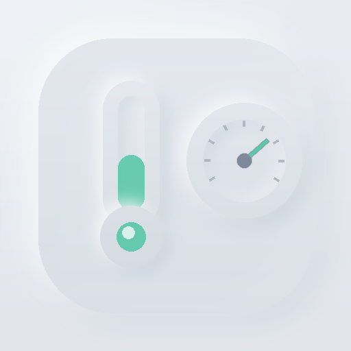
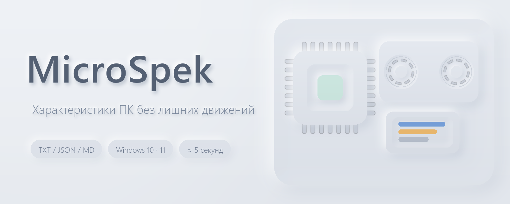
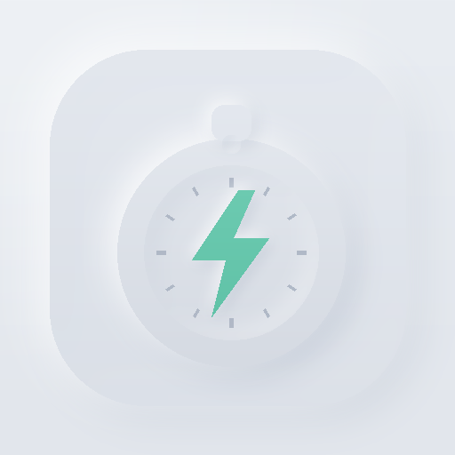
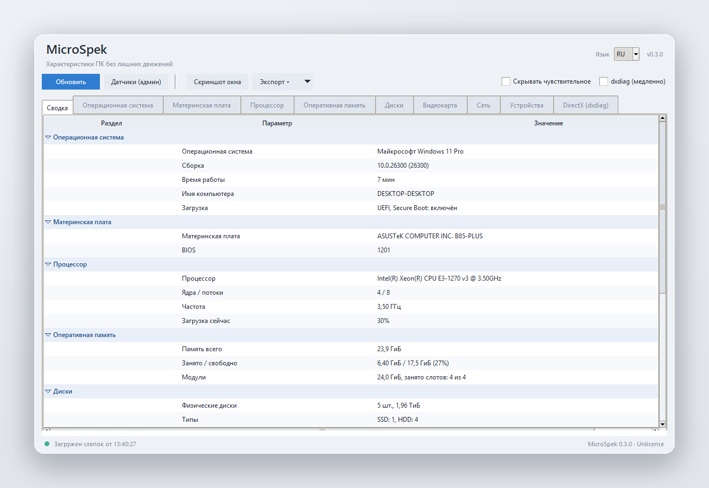

Живые датчики
Температуры GPU и hot spot, обороты вентиляторов, напряжение, мощность, SMART-температуры и остаток ресурса дисков.
Характеристики ПК без лишних движений
Процессор, память с профилем XMP, диски с разметкой и SMART, видеокарта, мониторы, сеть, датчики — одним окном или одним файлом для ИИ.

Несколько десятков полей о железе, собранных параллельно и поданных так, чтобы их было приятно читать.

Температуры GPU и hot spot, обороты вентиляторов, напряжение, мощность, SMART-температуры и остаток ресурса дисков.
Физические диски, разделы, тома и занятое место — цветной полосой с легендой, а не стеной цифр.

Коллекторы работают параллельно: полный слепок ≈ 4,5 с из исходников и ≈ 5,7 с в собранном exe.
Флаг --redact прячет серийники, MAC и пользователя перед отправкой. Никакой телеметрии и собственных сетевых запросов.
Один код, четыре самостоятельные сборки. Любая работает без установки Python — распакуйте архив и запустите exe.
Для всех и вся
Приятное окно, без консоли
Консоль для агентов и CI
Максимально лёгкий и настраиваемый
Вкладка «Сводка» собирает главное на одном экране, остальные показывают детали. Переключение языка — в правом верхнем углу.

TXT для чата, JSON для скриптов, Markdown для Notion и Obsidian. Язык отчёта задаётся флагом --lang.
--redact скрывает серийные номера, MAC и пользователя — включайте перед отправкой.
--no-dxdiag экономит до минуты: подробности DirectX обычно не нужны.
--sections cpu,memory,storage и --no-sensors превращают полный сбор в быстрый частичный.
MicroSpek работает локально. Единственные сетевые значения в отчёте — адаптеры и адреса, которые уже знает Windows.
Хелпер LibreHardwareMonitorLib работает без прав и сразу отдаёт доступное. Один запрос UAC добавляет температуры CPU и SMART дисков; отказ ничего не ломает. Для вентиляторов на многих платах нужен драйвер PawnIO — он не входит в архив.
MicroSpek — Unlicense: используйте, меняйте и распространяйте без указания авторства. Лицензии LibreHardwareMonitorLib и HidSharp лежат в папке sensors рядом с программой. Никаких аккаунтов, ключей и телеметрии.
Если ответа нет — issues на GitHub.
Нет. В каждый архив входит готовый exe с Python внутри. Распакуйте папку целиком и запускайте.
Архивы не подписаны сертификатом. Нажмите «Подробнее» → «Выполнить в любом случае».
Их запрашивает кнопка «Датчики (админ)» или флаг --admin-sensors. Без прав остаются доступны GPU и SMART части дисков части дисков; для CPU-вентиляторов часто нужен PawnIO.
Markdown — это таблицы и заголовки: файл сразу выглядит аккуратно в GitHub, Notion, Obsidian и чате с ИИ. TXT удобен для чтения в консоли.
Да, для этого есть издание snapshot: microspek-snapshot.exe читает microspek.json, собирает только нужные разделы и пишет файл без окна и вопросов.
Скачайте любой из четырёх архивов — это бесплатно, офлайн и без регистрации.
Перейти к загрузке